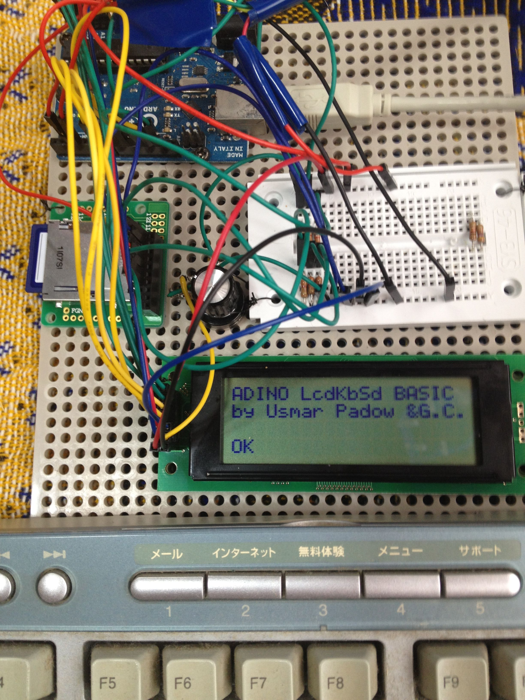
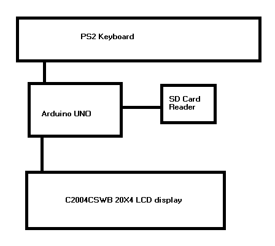

Arduino Retro Computer with LCD display Keyboard and SD card and BASIC interpreter
Copyright 2011 Usmar A Padow usmpadow@gmail.com
This is a stand-alone computer that you can build easily


Create the SD card circuit as in (source http://www.arduino.cc/cgi-bin/yabb2/YaBB.pl?num=1206874649 )
WARNING, the SDcard library does not use teh FAT file system. so any data you may have on the SD card will be lost. you will need to reformat the SD card to use it again on a PC.
The keyboard you use MUST be a PS2 keyboard(PS2 as in the old IBMs, not Playstation)
for information on how to connect the keyboard to the arudino go here:http://www.arduino.cc/playground/Main/PS2Keyboard
Download the software from https://github.com/amigojapan/Arduino-Retro-Computer-with-SD-card-and-LCD-display-and-Keyboard-input-with-BASIC-interpreter
Unpack the 2 zip files into the libraries directory of your arduino software, restart the IDE
I realize that few people will use the LCD module I used(which is a rare Japanese one), if someone uses a normal LCD remove the driver for mine, and replace all the print2nl() and print2 with lcd.print and lcd.printnl and send me a copy of the working sketch to usmpadow@gmail.com so I can put it up with this project.